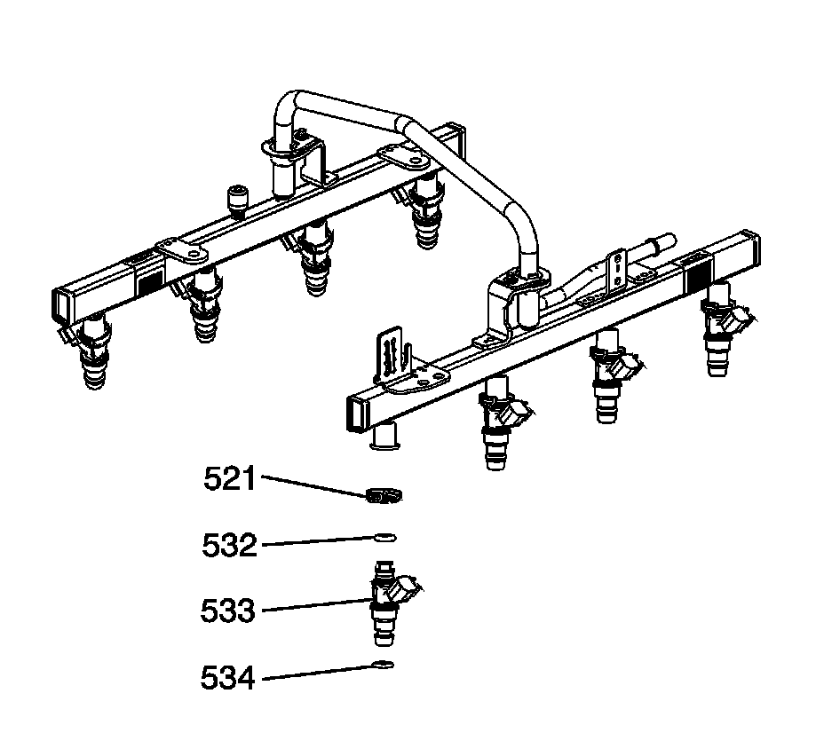
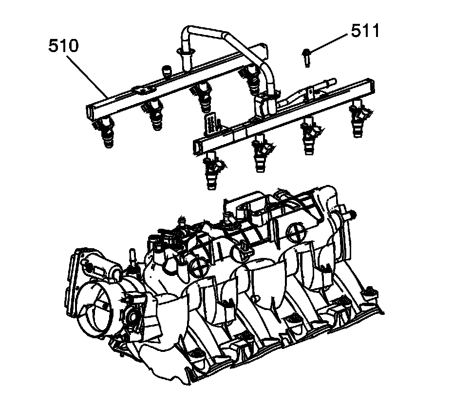
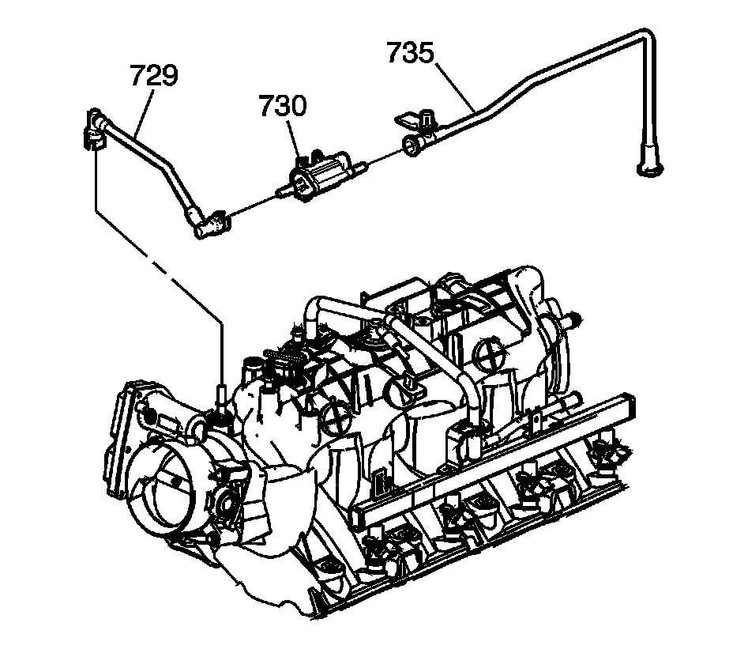
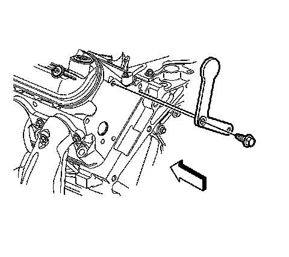

92. Fuel Rail and Injectors Installation
Fuel Rail and Injectors Installation

Caution: Refer to Fuel Rail Stop Bracket Installation Caution.
Important: DO NOT use the fuel injector O-ring seals again. Install NEW fuel injector O-ring seals during assembly.
1. Lubricate the NEW fuel injector O-ring seals (532, 534) with clean engine oil.
2. Install the O-ring seals to the fuel injectors.
3. Install the fuel injectors (533) and retainers (521).

4. Install the fuel rail assembly (510) to the manifold. Push firmly on both sides of the rail until all the injectors have entered their bores.
5. Apply a 5 mm (0.2 in) band of threadlock GM P/N 12345382 (Canadian P/N 10953489), or equivalent, to the threads of the fuel rail bolts. Refer to Sealers, Adhesives, and Lubricants.
Notice: Refer to Fastener Notice.
6. Install the fuel rail bolts (511).
Tighten the fuel rail bolts to 10 N.m (89 lb in).

7. Install the evaporative emission (EVAP) canister purge solenoid valve (730) and tubes (729, 735).

8. Install the fuel rail stop bracket and bolt.
Tighten the fuel rail stop bracket bolt to 50 N.m (37 lb ft).